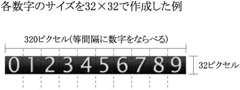

最終更新 2003/08/25
| プログラム製作 | t.kawabata |
| 配布元 | ぷらねっとぐりーん ( http://www.planet-green.com/ ) |
〇キリ番登録
・キリ番だった時に訪問者の名前を残せます。
・もちろん、キリ番機能を使わずに普通のアクセスカウンタとして使うことも可能です。
○強力なアクセスログ解析機能
・Referer（訪問者がどのリンクページから来たか）を記録できます。
・全文検索型のサーチエンジン(Google,Infoseek,goo等)から来た時の検索キーワードを集計できます。
・各訪問者について、何回目の訪問か、前回の訪問日時はいつかを記録できます。
・アクセスログをCSVファイルとして、エクセル等で開くことが出来ます。
○昨日と今日のアクセス数も表示できます
○数秒以内の連続アクセスはカウントしないようにできます
○カウンタ画像は自由に他の画像と差し替えて使えます
○カウンターは表示せずに、アクセスログ機能だけを利用することも出来ます
PHP v4.1.0以降。GDライブラリが使用可能であること。
(GDライブラリとは、CGIや各種プログラムから画像の作成・編集を行うためのライブラリです。PHP4.3.0からは標準で実装されています。)
原則として誰でも自由に使えますが、商用利用する場合は事前に御連絡ください。
CGIの改造・再配布は自由ですが、必ず、CGIと付属のドキュメントに記述されている作者名と
作者サイトへのリンクを残してください。
| counter.php | カウンターCGI |
| admin.php | 管理用CGI |
| image.png | カウンタ用数字画像 |
| sample.html | サンプルページ（キリ番ゲット機能有り） |
| sample2.html | サンプルページ（キリ番ゲット機能無し） |
| /data | CGIがデータを保存するディレクトリ(初期状態は空) |
| /manual | 説明書用ディレクトリ |
| └ readme.html | 説明書(このドキュメント) |
| └ image_for_document1.jpg | ↑で使用している画像 |
| /sample_image | 数字画像のサンプルが入っているディレクトリ |
「まるかんた」は多くの機能を持ったアクセスカウンターですが、利用する機能によってHTMLに挿入するタグが異なります。
▼普通のアクセスカウンターとして使用する場合
キリ番登録機能もリンク元記録機能も不要で、普通のアクセスカウンターとして使えればいいという場合は、次の１行をカウンターを表示したい部分に挿入してください。
| <img src="./counter.php?page=1"> |
▼キリ番登録機能、リンク元記録機能を使う場合
キリ番登録機能、リンク元記録機能を使う場合は、次の３つのスクリプトを挿入します。見本のHTMLファイル(sample.html)を用意していますので、そこからコピー＆ペーストすれば簡単です。
1.カウンター画像を表示したいところに埋め込むスクリプト
| <!-- カウンター表示部ここから --> <SCRIPT LANGUAGE="JavaScript"><!-- c_url = "./counter.php?page=1&mode=js&ref="+document.referrer; document.write("<sc"+"ript language='JavaScript' src='"+c_url+"'></sc"+"ript>"); // --> </SCRIPT> <NOSCRIPT><img src="./counter.php?page=1"></NOSCRIPT> <!-- カウンター表示部ここまで --> |
2.キリ番ゲット者一覧を表示したい部分に埋め込むスクリプト。
| <!-- キリ番ゲット者一覧ここから --> <script language="JavaScript" src="./counter.php?page=1&mode=kg"></script> <!-- キリ番ゲット者一覧ここまで --> |
3.ページの末尾に埋め込むスクリプト。</body>タグの手前に埋め込むのが望ましい。
| <!-- 名前送信部ここから --> <SCRIPT LANGUAGE="JavaScript"><!-- GetName(); // --> </SCRIPT> <!-- 名前送信部ここまで --> |
▼キリ番ゲット機能を使わない場合
キリ番ゲット機能は使わないがリンク元記録機能は使うという場合は、次のスクリプトを挿入してください。
| <!-- カウンター表示部ここから --> <SCRIPT LANGUAGE="JavaScript"><!-- c_url = "./counter.php?page=1&ref="+document.referrer; document.write("<img src='"+c_url+"'>"); // --> </SCRIPT> <NOSCRIPT><img src="./counter.php?page=1"></NOSCRIPT> <!-- カウンター表示部ここまで --> |
▼カウンターを表示せずにアクセスログ機能だけを使用する場合
カウンターは何も表示せずに、「まるかんた」の持つアクセスログ解析機能のみを利用する場合は次のスクリプトを挿入します。
| <!-- CGI呼出部ここから --> <SCRIPT LANGUAGE="JavaScript"><!-- c_url = "./counter.php?page=1&mode=noimage&ref="+document.referrer; document.write("<img src='"+c_url+"' width=1 height=1>"); // --> </SCRIPT> <NOSCRIPT><img src="./counter.php?page=1&mode=noimage" width=1 height=1></NOSCRIPT> <!-- CGI呼出部ここまで --> |
▼昨日と今日のカウンタを表示する場合
1.GDライブラリを使えるなら次のスクリプトを挿入してください。
<!-- 今日と昨日のアクセス表示 ここから --> |
2.GDライブラリを使えない時は次のスクリプトを挿入してください。上のものと比べると若干、動作が遅くなります。
|
○ステップ２ counter.php内の設定変更
counter.phpをエディタで開き、先頭部分の設定を各自の環境にあわせて変更してください。とりあえず実行したい場合は変更しなくてもそのままで動作します。エディタは秀丸などのEUCに対応したものでないと文字化けするので注意してください。
ここでは設定項目中の特に重要なものについて解説します。
$UseGD = 1;
PHPでGDライブラリを使えるなら1,使えないなら0を指定します。1にした場合はGDライブラリによってカウンターを一枚の画像として表示しますが、0にした場合は各桁分の数字画像を並べて表示します。ただし0にした場合はJavaScript未対応ブラウザでは動作しません。
$SaveAccessLog = 1;
アクセスログを保存する場合は1,しない場合は0を指定します。アクセスログは放っておくと行数が増えていくので、定期的に削除やバックアップをしてください。
$PageIndex[(ページID)] = ドキュメント名;
アクセスログに記録するためのページID(前章を参照)とドキュメント名を定義します。複数のページにアクセスカウンターを設置する場合は何個でも追加できます。尚、この設定項目はadmin.phpにもあるので、同じ内容にしておいてください。
(記述例)
$PageIndex[1] = "index.html";
$PageIndex[2] = "hogehoge.html";
$PageIndex[3] = "piyopiyo.html";
$kiribantani =100;
何人ごとにキリ番にするかを指定します。0にするとキリ番機能が無効になります。
$sp_kiriban = array(77,123,333,555,777);
上記以外の特別なキリ番を何個でも追加できます。
FTPソフト等を使ってPHPファイル、画像ファイル、カウンタを設置したHTMLファイルをサーバにアップロードします。サーバ上での各ファイルのパーミッションは次のようになります。(HTMLファイルの設置場所・パーミッションは任意)
/(設置ディレクトリ)/ [755]
|
|--/data/ [777]...アクセスログやキリ番ゲット者のリストを保存するディレクトリ
|
|-- counter.php [744]... プログラム本体
|-- admin.php [744]... 管理用プログラム
|-- image.png [744]... カウンタ用の元画像
複数のページにカウンターを設置する場合は、HTMLに挿入するタグの中の、page=○の部分を設置するページごとに違う数字にしてください。以後、この数字をページIDと呼びます。このページIDの設定はステップ２でCGIの設定を変更する時も必要になります。また、CGI本体(counter.php)とHTMLファイルを別々のディレクトリに設置する場合はCGIのパスも変更してください。
./counter.php?page=1・・・ ------------- ------ | | | +--- ページID(ページごとに異なる数字)を指定 | +------------ CGIのパス(設置場所)
前章・ステップ１のスクリプトで強調表示している部分がページIDとパスの設定箇所になります。
フレーム内のページにカウンターを設置した場合、リンク元がフレームのページとして記録されてしまいます。そのような場合は、タグ中の document.referrer を parent.document.referrer に変更してください。
カウンター用の画像は自由に他の画像と差し替えて使えます。インターネット上にはフリーで使えるカウンター用画像サイトが多数ありますので、是非、好みの画像を探してみてください。ここでは画像変更時の手順について説明します。
まず、0～9の数字を等間隔に並べた画像を元画像として用意します(図1)。画像サイズに特に制限はありませんが常識的なサイズにしてください。ファイル形式はGIF,PNG,JPEG,BMPが使えますが、GDライブラリの現バージョンがGIFのサポートを打ち切ったことを考えると、PNGかJPEGで用意しておくのが無難です。
|  |
次にcounter.php内の設定を変更します。
$ImageSrcName = "image.png";
用意した画像のファイル名
$ImageSrcType = 0;
画像の種類( 0:PNG 1:GIF 2:JPG 3:BMP)
$ImgSize_number_x = 32;
数字画像1つあたりの横サイズ(ピクセル)
$ImgSize_number_y = 32;
数字画像1つあたりの縦サイズ(ピクセル)
尚、GDライブラリを利用できない場合は、10個の数字画像に 0.gif, 1.gif ～ 9.gif という名前を付けて用意します(GIFの場合)。この場合、上記の設定では$ImageSrcTypeのみが有効になります。
既に他のアクセスカウンタを利用していて、今ままでのカウント数を引き継ぎたいという場合は、一度CGIを実行した後、dataディレクトリ内に作成されるcount_(ページID).datというファイルをエディタ等で開いて数字を直接修正してください。
admin.phpを呼び出すとアクセスログ閲覧やログ解析が出来ます。あらかじめ、admin.phpをエディタ等で開いて管理人パスワードを変更しておいてください。
・ブラウザがJacaScriptに対応していか、又は無効にしている場合は、Referrer(リンク元)記録とキリ番ゲット者の一覧表示・名前登録機能を利用できません。
・ブラウザがCookieに対応していないか、又は無効にしている場合は、前回の訪問日・訪問回数を記録できません。
◆動作しない(画像が表示されない・エラーが出る、など)
サーバーのPHPのバージョンと、GDライブラリが使用可能かどうかの確認をしてください。
レンタルサーバー等では未だにv4.1.0以前の古いバージョンを使っている所がありますが、そのような場合はサーバー管理者にお願いしてバージョンアップしてもらいましょう。最新版のv4.3.0ならば、標準でGDライブラリが使用できます。
PHPのバージョンは、次のスクリプトで調べることができます。適当なファイル名(test.phpなど)を付けてサーバーにアップロードし、実行してください。
<?php |
このスクリプトを実行すると、画面の一番上にPHPのバージョンが表示されます。
そして、上から３段目あたりにある 'Configure Command' という項目の中に '--with-gd'が入っていればGDライブラリを使用できます。これが'--without-gd'になっていると使用不可です。
'--with-gd'も'--without-gd'も書いてない時は、サーバー管理者に確認してみるか、とりあえずカウンターを設置して試してみる手があります。
PHPのバージョンもGDライブラリも問題が無いのに動作しない時は、各ファイル・ディレクトリのパーミッションを確認してください。
特に、データ保存用ディレクトリのパーミッションが間違っていると、カウンタファイルを作成できずにエラーになります。
◆エディタでPHPファイルを開くと文字化けする
EUCに対応しているエディタで開いてください(秀丸エディタなど)。
ちなみに、秀丸エディタの場合は設定を次のように変更してください。
メニューの「その他」から「動作環境」の画面を表示して、その左側にある「編集」を選択し、「文字コードの自動認識をする」をオンにしてください。